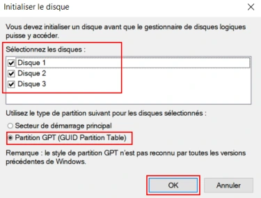
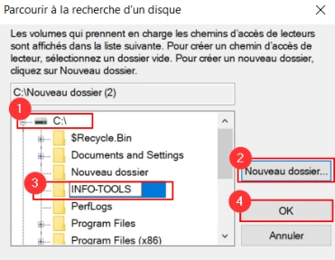

Le support est transcrit et structuré pour la lecture. Les valeurs secrètes et les noms propres au centre de formation sont neutralisés dans les exemples concernés.
Avant de démarrer ce TP, il convient d’avoir suivi les vidéos du module 1 et réalisé le TP précédent.
30 minutes à 1 heure
Prérequis :
Ajout de disques au serveur :
Ajouter trois disques SCSI de 10 Go chacun au serveur W19-SRV1.
Besoins de stockage :
En vue de stocker les documents de travail des utilisateurs, créez un volume en RAID-5 pouvant héberger environ 6 Go de données appelé « Données » et accessible depuis le lecteur D:\

Les membres du service informatique doivent pouvoir accéder à tout moment aux outils d’administration du système. Créez un volume miroir de 4 Go monté dans C:\INFO-TOOLS et reposant sur les disques 1 et 3.
Une base de données SQL Server d’une taille maximale de 8 Go sera hébergée sur le serveur. Créez un volume optimisé pour les performances en lecture/écriture, nommé Database et accessible via le lecteur E:\.

Ces partitions n’hébergeront pas de système d’exploitation.
Configuration du stockage sur le serveur :
1. Pouvez-vous accéder aux données stockées sur Données ? Oui □ NonLe comportement peut différer en fonction du disque retiré.
Sur un RAID-5 il est possible de retirer un disque sans incidence sur l’accès aux données.
2. Pouvez-vous accéder aux données stockées dans C:\INFO-TOOLS ? Oui □ NonPourquoi ? Le comportement peut différer en fonction du disque retiré. Sur un RAID-1 il est possible de retirer un disque sans incidence sur l’accès aux données. Réparation des volumes défectueux :